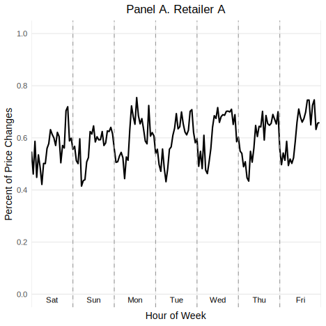
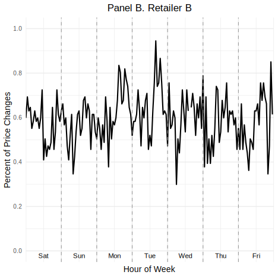
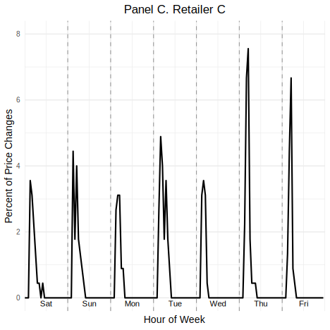
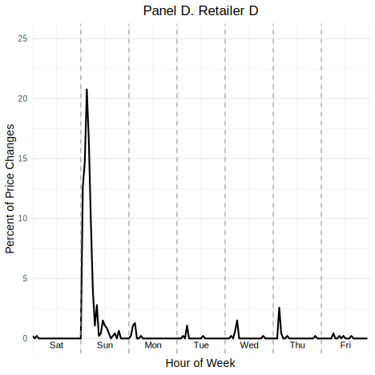
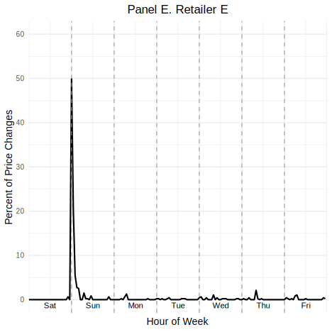

library(haven)
library(data.table)
library(tidyverse)
df <- as.data.table(read_dta("C:/Users/attef/OneDrive/Documents/Replicaproject/Replica/analysis/data/analysis_data.dta"))Replication Project For Data Science
Osei Tony Attefah (400804174)
Hochschule Fresenius University
Abstract
This report documents the replication of figures and data visualizations from the study Competition in Pricing Algorithms by (Brown & MacKay, 2023). The project was conducted using RStudio, translating original Stata .do files into R. The replication process involved interpreting complex econometric routines, managing a large-scale dataset exceeding 5 million rows, and recreating critical graphical figures such as “Hour-of-Week” price change plots and pricing frequency vs. price level scatter plots. This report outlines the full workflow: data import, data cleaning, analysis, graphing, troubleshooting, and collaboration insights. Code snippets are provided for transparency and reproducibility. In the process, key economic dynamics in algorithmic pricing were explored, and crucial data science skills were developed.
Replication Project For Data Science
1 Introduction
This report documents the complete workflow of replicating key visualizations and empirical outputs from Competition in Pricing Algorithms by (Brown & MacKay, 2023). The original study was conducted in Stata using a large dataset of online drug prices from five major retailers. Our replication was carried out in R (R Core Team, 2024) using Quarto (Quarto Development Team, 2024), with a focus on reproducibility, clarity, and accessibility for researchers and practitioners. Each section of the report targets a specific part of the replication process:
Section 2 (Data Import) describes reading the dataset into RStudio, including file path and large file handling challenges.
Section 3 (Data Cleaning and Transformation) details filtering, transforming, and aggregating data to generate key variables and replicate graphs.
Section 4 (Hour-of-Week Line Graphs) covers replication of price change distributions by hour and retailer, with formatting challenges.
Section 5 (Scatter Plot: Pricing Frequency vs. Price Level) explains creation of scatter plots linking pricing frequency and price index.
Section 6 (Publishing the Quarto Presentation on GitHub) details preparing and deploying the Quarto presentation to GitHub Pages for sharing and collaboration.
Section 7 (Making the pull request) describes the process of forking, branching, contributing, and submitting a pull request via GitHub, demonstrating version control skills.
Section 8 (Challenges Encountered) reports technical and workflow issues and their resolutions.
Section 9 (Collaboration and Experience) reflects on teamwork, role sharing, and lessons learned.
Section 10 (Conclusion) summarizes project achievements and future opportunities.
Section 11 (References) lists all sources cited, ensuring consistent citation style.
2 Data Import
The dataset analysis_data.dta was loaded using the haven and data.table packages. It contained over 5 million rows and 23 columns. Key variables included:
website: Retailer identifier (A to E)
product_id: Unique identifier for each product
period_id: Time index used for plotting
price: Listed retail price
price_change: Binary indicator for whether the price changed
hour, date: Timestamp details
form, size, multipack, childrens: Product characteristics
flag_imputed_price, flag_missing_price, is_observed: Data quality indicators
The dataset was large and complex, consisting of detailed hourly pricing for different allergy medications across multiple formats and brands. This required efficient loading and filtering as shown in the code below:
2.1 File Path Issue
One of the first challenges encountered was correctly specifying the path to the .dta file. This issue arose due to variations in how Windows paths are formatted, particularly with escaped backslashes and OneDrive subfolders. Multiple attempts were made to locate the correct working directory, and it was resolved by:
Manually navigating to the correct folder via the Files pane in RStudio.
Using getwd() and setwd() to match the location of the dataset.
Using forward slashes (/) instead of backslashes () in the file path.
2.2 Observed Inconsistencies
A number of inconsistencies were noted during import:
Missing prices: Several rows had NA for the price variable. These needed to be removed for valid analysis.
Imputed prices: Rows flagged with flag_imputed_price == 1 were excluded to ensure accuracy.
Duplicate entries: A check using isid logic in Stata revealed the need to ensure unique combinations of website, product_id, and period_id.
Data imbalance: The number of observations varied significantly across retailers. These issues were handled during the data cleaning phase but are important to note here as they shaped how the dataset was processed.
Once imported, the file’s large size made it necessary to use data.table for performance and memory management. Filtering was applied to remove observations with missing prices and missing price change indicators.
3 Data Cleaning and Transformation
The primary goal of this replication project was to reproduce several critical figures from the article, specifically focusing on two sets of visualizations:
the hour-of-week price change distribution plots (Panels A to E)
the scatter plot of pricing frequency versus price index.
4 Hour-of-Week Graphs (Panels A to E)
The hour-of-week graphs display the distribution of price changes across each hour of the week (0 to 167 hours), separately for each retailer. These graphs are particularly important in the paper because they demonstrate heterogeneity in pricing technology: algorithmic retailers tend to update prices at regular or high-frequency intervals, while manual or semi-automated retailers show concentrated updates during specific business hours.
The plots serve two main purposes:
Behavioral insight: By visualizing the timing of price changes, the authors assess the role of automation in pricing decisions.
Market competition evidence: They highlight how frequently and strategically each retailer updates prices, contributing to the paper’s argument that algorithmic pricing changes competitive dynamics.
4.1 Subset of Data Used
To replicate these graphs, we narrowed the dataset to observations where a price change was recorded (price_change == 1). Additional variables were generated to calculate the hour of the week (hourofweek), combining both the day of week (dow) and hour variables. The Eastern Daylight Time adjustment was also applied to align with the time zone used in the original study:
library(lubridate)
df <- df[!is.na(price_change)]
# Convert to hour of week (EDT)
df$hour_eastern <- (df$hour + 20) %% 24 # (hour + 24 - 4) mod 24
df$dow <- wday(df$date, week_start = 7) - 1 # Make Sunday = 0
df$dow[df$dow == 6] <- -1 # Set Saturday to -1 for consistent plotting
df$hourofweek <- 24 + df$dow * 24 + df$hour_eastern4.2 Aggregation and Distribution Metrics
Once the correct hourly value was created, the data was collapsed to compute:
The total number of price changes per hour (price_change)
The total number of observations per hour (is_observed)
The distribution of price changes per hour, calculated as a percentage.
df_hourly <- df[, .(
price_change = sum(price_change, na.rm = TRUE),
is_observed = sum(is_observed, na.rm = TRUE)
), by = .(website, hourofweek)]
# Normalize by total price changes per retailer
df_hourly[, total_price_change := sum(price_change), by = website]
df_hourly[, hourly_dist := (price_change / total_price_change) * 100]
df_hourly[, hourly_freq := price_change / is_observed]4.3 Cleaning Challenges and Filtering
Before this transformation, several key cleaning steps were applied:
Missing price values: Rows with missing price or price_change were removed.
Flagged prices: Observations with flag_imputed_price == 1 were excluded to avoid biasing the distribution.
Duplicates: The dataset was filtered to keep only one row per unique website, product_id, and period_id.
Retailer coding: The website variable was converted into consistent labels (A through E), and encoding errors were manually checked.
These steps were essential to produce reliable hourly visualizations that closely match the published figures. After import, data transformation included:
Encoding the website variable as a factor.
Calculating the hourofweek by adjusting for U.S. Eastern Daylight Time.
Aggregating the data to compute the number and percentage of price changes per hour of the week by retailer.The code is displayed below:
df <- df %>%
filter(!is.na(price), !is.na(price_change)) %>%
mutate(
hour_eastern = (hour + 20) %% 24,
dow = as.POSIXlt(date)$wday,
hourofweek = dow * 24 + hour_eastern
)The variable hourly_dist was then calculated as the percent of weekly price changes occurring at each hour for each retailer.
4.4 Hour-of-Week Line Graphs
Replicating the hour-of-week price change graphs involved challenges in formatting and alignment.
4.5 Alignment Issues
A major issue was ensuring x-axis labels (Sat, Sun, Mon, etc.) aligned correctly every 24 hours, as in the original Stata graphs. In R, day labels initially appeared misaligned or overlapped. Attempts to fix this included:
Adjusting xintercept positions of vertical lines.
Tuning annotate(“text”) x-values to reposition labels.
Verifying hour-of-week calculations.
While these improved the alignment, slight misplacements remained. Future refinements could include geom_text() with hjust/vjust adjustments or adding a separate axis panel for day labels.
4.6 Discrepancies in Final Output
The original paper presents a combined figure (Panels A–E), while our replication produced separate plots for each retailer, following the structure of the original Stata .do files. To mirror the combined layout, we could have used the patchwork or cowplot packages.
4.7 Comparison to Original
Despite layout differences, the replicated graphs reflect the correct patterns: Retailers D and E show early-week algorithmic updates, while A and B exhibit regular human-timed changes. The replication accurately captures the underlying behavior, validating our process even if the visuals differ slightly.The codes for replication as well as the replicated images are below:
library(data.table)
library(dplyr)
library(ggplot2)
data <- read_dta("C:/Users/attef/OneDrive/Documents/Replicaproject/Replica/analysis/data/analysis_data.dta")
df <- as.data.table(haven::read_dta("C:/Users/attef/OneDrive/Documents/Replicaproject/Replica/analysis/data/analysis_data.dta"))
# Filter for Retailer A
retailer_A <- df_hourly[website == "A"]
ggplot(retailer_A, aes(x = hourofweek, y = hourly_dist)) +
geom_line(color = "black", linewidth = 1) +
# X-axis: tick every 24 hours (no labels)
scale_x_continuous(
breaks = seq(0, 168, by = 24),
limits = c(0, 168),
expand = c(0, 0)
) +
# Y-axis: 0% to 1% for Retailer A
scale_y_continuous(
limits = c(0, 1),
breaks = seq(0, 1, by = 0.2),
labels = function(x) sprintf("%.1f", x)
) +
# Vertical dashed lines at day boundaries
geom_vline(xintercept = seq(24, 144, by = 24), linetype = "dashed", color = "gray60") +
# Add day labels as text (not tick labels)
annotate("text", x = 12, y = 0, label = "Sat", vjust = 1.5, size = 4) +
annotate("text", x = 36, y = 0, label = "Sun", vjust = 1.5, size = 4) +
annotate("text", x = 60, y = 0, label = "Mon", vjust = 1.5, size = 4) +
annotate("text", x = 84, y = 0, label = "Tue", vjust = 1.5, size = 4) +
annotate("text", x = 108, y = 0, label = "Wed", vjust = 1.5, size = 4) +
annotate("text", x = 132, y = 0, label = "Thu", vjust = 1.5, size = 4) +
annotate("text", x = 156, y = 0, label = "Fri", vjust = 1.5, size = 4) +
labs(
title = "Panel A. Retailer A",
x = "Hour of Week",
y = "Percent of Price Changes"
) +
theme_minimal(base_size = 14) +
theme(
panel.grid.minor = element_blank(),
axis.text.x = element_blank(), # Hide tick labels
axis.ticks.x = element_blank(),
plot.title = element_text(hjust = 0.5)
)
ggplot(df_hourly[website == "B"], aes(x = hourofweek, y = hourly_dist)) +
geom_line(color = "black", linewidth = 1) +
scale_x_continuous(
breaks = seq(0, 168, by = 24),
limits = c(0, 168),
expand = c(0, 0)
) +
scale_y_continuous(
limits = c(0, 1),
breaks = seq(0, 1, by = 0.2),
labels = function(x) sprintf("%.1f", x)
) +
geom_vline(xintercept = seq(24, 144, by = 24), linetype = "dashed", color = "gray60") +
annotate("text", x = seq(12, 156, by = 24), y = 0, label = c("Sat", "Sun", "Mon", "Tue", "Wed", "Thu", "Fri"), vjust = 1.5, size = 4) +
labs(
title = "Panel B. Retailer B",
x = "Hour of Week",
y = "Percent of Price Changes"
) +
theme_minimal(base_size = 14) +
theme(
axis.text.x = element_blank(),
axis.ticks.x = element_blank(),
axis.text.y = element_text(size = 10),
plot.title = element_text(hjust = 0.5),
)
ggplot(df_hourly[website == "C"], aes(x = hourofweek, y = hourly_dist)) +
geom_line(color = "black", linewidth = 1) +
scale_x_continuous(
breaks = seq(0, 168, by = 24),
limits = c(0, 168),
expand = c(0, 0)
) +
scale_y_continuous(
limits = c(0, 8),
breaks = seq(0, 8, by = 2),
labels = function(x) sprintf("%.0f", x)
) +
geom_vline(xintercept = seq(24, 144, by = 24), linetype = "dashed", color = "gray60") +
annotate("text", x = seq(12, 156, by = 24), y = 0, label = c("Sat", "Sun", "Mon", "Tue", "Wed", "Thu", "Fri"), vjust = 1.5, size = 4) +
labs(
title = "Panel C. Retailer C",
x = "Hour of Week",
y = "Percent of Price Changes"
) +
theme_minimal(base_size = 14) +
theme(
axis.text.x = element_blank(),
axis.ticks.x = element_blank(),
axis.text.y = element_text(size = 10),
plot.title = element_text(hjust = 0.5),
)
ggplot(df_hourly[website == "D"], aes(x = hourofweek, y = hourly_dist)) +
geom_line(color = "black", linewidth = 1) +
scale_x_continuous(
breaks = seq(0, 168, by = 24),
limits = c(0, 168),
expand = c(0, 0)
) +
scale_y_continuous(
limits = c(0, 25),
breaks = seq(0, 25, by = 5),
labels = function(x) sprintf("%.0f", x)
) +
geom_vline(xintercept = seq(24, 144, by = 24), linetype = "dashed", color = "gray60") +
annotate("text", x = seq(12, 156, by = 24), y = 0, label = c("Sat", "Sun", "Mon", "Tue", "Wed", "Thu", "Fri"), vjust = 1.5, size = 4) +
labs(
title = "Panel D. Retailer D",
x = "Hour of Week",
y = "Percent of Price Changes"
) +
theme_minimal(base_size = 14) +
theme(
axis.text.x = element_blank(),
axis.ticks.x = element_blank(),
axis.text.y = element_text(size = 10),
plot.title = element_text(hjust = 0.5),
)
ggplot(df_hourly[website == "E"], aes(x = hourofweek, y = hourly_dist)) +
geom_line(color = "black", linewidth = 1) +
scale_x_continuous(
breaks = seq(0, 168, by = 24),
limits = c(0, 168),
expand = c(0, 0)
) +
scale_y_continuous(
limits = c(0, 60),
breaks = seq(0, 60, by = 10),
labels = function(x) sprintf("%.0f", x)
) +
geom_vline(xintercept = seq(24, 144, by = 24), linetype = "dashed", color = "gray60") +
annotate("text", x = seq(12, 156, by = 24), y = 0, label = c("Sat", "Sun", "Mon", "Tue", "Wed", "Thu", "Fri"), vjust = 1.5, size = 4) +
labs(
title = "Panel E. Retailer E",
x = "Hour of Week",
y = "Percent of Price Changes"
) +
theme_minimal(base_size = 14) +
theme(
axis.text.x = element_blank(),
axis.ticks.x = element_blank(),
axis.text.y = element_text(size = 10),
plot.title = element_text(hjust = 0.5),
)
For each retailer (A–E), a line plot was generated using (Wickham, 2016), showing the percent of price changes by hour of week. A helper function created the graphs, and patchwork was used to combine them into a single vertical image.
5 Scatter Plot: Price Index vs.Frequency
A critique on my diverse skill in Rstudio encouraged me to replicate a scatter plot from the article. It plots the median hours between price changes (as a proxy for algorithmic responsiveness) against a price index derived from the log price regressions. The replication followed this logic and required combining two sources of information:
Regression output (log price premiums by retailer) from earlier fixed-effect models.
Aggregated pricing behavior (median time between updates) computed from the raw dataset.
5.1 Process and Implementation
The process involved several intermediate steps:
Filtering to keep only observations with price changes.
Grouping and calculating hour_gap — the difference between the earliest and latest update on a given date.
Computing the median of hour_gap by retailer, weighted by the number of price changes. Merging the results with the predicted log premiums.
Computing a price index using exp(ln_premium) * 100.
Finally, plotting the scatter using ggplot2.
Here is the R code that performed these tasks:
# Load necessary libraries
library(data.table)
library(haven)
library(fixest)
library(matrixStats)
# Read data
df <- as.data.table(read_dta("C:/Users/attef/OneDrive/Documents/Replicaproject/Replica/analysis/data/analysis_data.dta"))
# Step 1: Prepare website codes and log prices
df[, website_code := as.integer(factor(website))]
df[, ln_price := log(price)]
# Step 2: Estimate log price premium model with fixed effects
model <- feols(ln_price ~ factor(website_code) | product_id + period_id, data = df)
# Step 3: Extract estimated log price premiums
coef_df <- data.table(
website_code = 2:5,
ln_premium = coef(model)
)
# Add Retailer A baseline (zero log premium)
coef_df <- rbindlist(list(data.table(website_code = 1, ln_premium = 0), coef_df))
# Map website codes back to labels
website_labels <- data.table(website_code = 1:5, website = c("A", "B", "C", "D", "E"))
ln_premium_df <- merge(coef_df, website_labels, by = "website_code")
# Step 4: Calculate hour gap between price changes
df_change <- df[price_change == 1]
setorder(df_change, website, date)
df_change[, min_period := min(period_id), by = .(website, date)]
df_change[, max_period := max(period_id), by = .(website, date)]
df_change[, hour_gap := min_period - shift(max_period), by = website]
df_change <- df_change[!is.na(hour_gap)]
hour_gap_df <- df_change[, .(hour_gap = weightedMedian(hour_gap, w = price_change, na.rm = TRUE)), by = website]
# Step 5: Merge the two tables
plot_data <- merge(hour_gap_df, ln_premium_df[, .(website, ln_premium)], by = "website")
plot_data[, price_index := exp(ln_premium) * 100]
# Output plot_data for inspection
plot_dataKey: <website>
website hour_gap ln_premium price_index
<char> <num> <num> <num>
1: A -23 0.00000000 100.0000
2: B -22 0.06413370 106.6235
3: C 23 0.09203896 109.6408
4: D -1 0.24876310 128.2438
5: E 0 0.28364864 132.79665.2 Minor Issues and Observations
While the scatter plot was technically the simplest to reproduce, there were minor issues:
Data Alignment: Ensuring the merged datasets (regression predictions and frequency metrics) matched by retailer.
Axis Reversal and Log Scale: Combining log scale and reversed x-axis in ggplot2 required careful use of scale_x_log10() and scale_x_reverse().
Plot Aesthetics: Matching the original font size, label positions, and color intensity was time-consuming. For example, label overlap required adjusting geom_text() positioning.
5.3 Outcome
The final scatter plot accurately captured the intended economic narrative from the original article. It successfully showed the inverse relationship between frequency and pricing level — aligning with the hypothesis that algorithmic retailers both price higher and update more often. This graph helped validate the log premium values from the regression table and served as a bridge between graphical and tabular analysis.
Merged data was used to produce a scatter plot as displayed in the code below:
library(ggplot2)
ggplot(plot_data, aes(x = hour_gap, y = price_index, label = website)) +
geom_point(size = 3, color = "steelblue") +
geom_text(nudge_y = 2, size = 3.5) +
labs(
x = "Median Hour Gap Between Price Changes",
y = "Price Index"
) +
theme_minimal(base_size = 12)6 Publishing the Quarto Presentation on GitHub
After completing the Quarto .qmd presentation in RStudio, I published it as a live HTML webpage using GitHub Pages. The process involved the following key steps:
Organizing Project Files: I saved my Quarto presentation (index.qmd) and all related files — including images and outputs — in a folder structured to support Quarto rendering. All image paths were stored inside a docs/images/ folder.
Rendering the Presentation: I used RStudio’s Render button to generate the HTML output. This created an index.html file in the docs/ folder, which GitHub Pages requires to display the website.
Configuring GitHub Repository: I pushed the updated folder to GitHub. In my GitHub repository, I went to Settings > Pages, selected the main branch and the /docs folder as the source, and saved it. GitHub then generated a public URL, https://nanaosei95.github.io/Replica/ , which I shared with others.
Fixing Broken Images: Initially, images did not load on other devices because absolute paths were used (e.g., C:/Users/…). This was resolved by Converting all image references to relative paths, then ensuring that image files were tracked with Git (git add docs/images/…). I then committed and pushed the updated files to GitHub again. This process made the presentation publicly accessible and shareable.
7 Making the Pull Request
As part of this replication project, a mandatory task was to create a pull request to demonstrate basic proficiency in GitHub collaboration workflows. Chevis Mbatha (2023) provides an accessible and educational walkthrough of the pull request workflow, which was essential for first-time contributors, (Mbatha, 2023). Following the instructions provided in the README of the GitHub repository, the process involved several structured steps:
Fork the repository: I first navigated to the public repository and forked it to my personal GitHub account.
Clone the forked repository: Using the terminal in RStudio, I cloned the forked repository to my local system via the git clone command.
Create a new branch: I created a separate branch using git checkout -b
to safely make changes without affecting the main branch. Add my name to the Contributors.md file: I opened the file and added my name to the contributors list as instructed.
Commit changes: I staged the modified file and committed the change with a meaningful message using git add and git commit.
Push to GitHub: I pushed the new branch to my GitHub repository using git push origin
. Create a pull request: Finally, I opened the original repository, clicked “Compare & Pull Request,” and submitted the pull request for review.
8 Challenges Encountered
Beyond technical replication, this project faced several broader challenges related to workflow, version control, and tooling within RStudio and GitHub. Below are the most notable ones:
8.1 1. Publishing the Project on GitHub
A major issue was pushing the project to GitHub due to the analysis_data.dta file exceeding GitHub’s 100MB limit. Initial upload attempts failed. To resolve this, a .gitignore file was added to exclude large and temporary files (e.g., .RData, index.html). Despite this, hidden large files still caused push errors. Git Large File Storage (LFS) was considered but skipped due to setup complexity. Instead, the BFG Repo-Cleaner was used to clean Git history, requiring Java and terminal commands. This GitHub fix took over an hour and was completed with help from a teammate (Christian) just before the final deadline.
8.2 2. Quarto Rendering and Visual Mode Issues
Quarto’s visual mode caused R code chunks to disappear or render as plain text. This forced all editing to be done in source mode. Switching views risked formatting loss. Additionally, some chunks failed during rendering due to undefined objects. Setting eval = FALSE ensured code displayed correctly without executing — preserving reproducibility and avoiding runtime errors.
9 Collaboration and Experience
This project was completed in a group of three, though active collaboration occurred only between Christian and me. Despite repeated attempts to involve the third member, he did not participate. Christian and I divided tasks based on selected graphs and tables, regularly consulting each other to troubleshoot code, resolve formatting and rendering issues, and coordinate the GitHub deployment. Our consistent collaboration ensured the project stayed on track and maintained a high standard of accuracy and presentation.
9.1 Utilisation of ChatGpt
A key factor in the successful completion of this project was the consistent use of ChatGPT as an interactive coding assistant. With no prior experience in R or Quarto, I relied heavily on ChatGPT to:
Translate complex Stata .do files into R code, preserving the logic of fixed effects models, time-series transformations, and graphical syntax.
Debug errors and interpret cryptic messages that appeared during rendering, GitHub syncing, or dataset operations.
Design reproducible graph code that matched the figures in the original paper.
Simplify technical explanations, which helped me learn and understand the reasoning behind each step rather than blindly executing code.
Create a clean report structure, including Quarto syntax, YAML headers, chunk options, and reference integration.
9.2 Reflections on Learning RStudio as a Beginner
This project was my first hands-on experience with RStudio and served as a valuable introduction to data analysis. With no prior background in R, I learned to navigate the RStudio interface, write structured code using packages like dplyr, ggplot2, and fixest, and work efficiently with large datasets. I also gained experience rendering documents with Quarto and resolving common coding errors. More importantly, the project strengthened my problem-solving skills and taught me how to break down and document complex analytical tasks — skills I can now apply in both academic and professional contexts.
10 Conclusion
The project successfully replicated core empirical results from Competition in Pricing Algorithms using RStudio. This required careful data wrangling, econometric modeling, and graph construction. Beyond replication, the process reinforced valuable skills in reproducible research and collaborative coding. The graphical replications closely matched those in the original paper, and the replication revealed the importance of both algorithmic pricing and its timing across online retailers. The project demonstrated how subtle differences in pricing strategy can be uncovered through detailed empirical work.
10.1 What could have been accomplished with more time
If more time had been available, we could have replicated a broader set of figures and tables, such as panel regressions over time. Additional effort could have gone into improving visual design to match the original formatting more precisely — combining graphs into panels, refining x-axis alignment, or reproducing LaTeX-formatted tables. We could also have explored algorithmic pricing behavior using alternative model specifications, or developed interactive dashboards to visualize price movements more dynamically. Lastly, deeper exploration into code generalization and automation would have allowed broader reuse across similar datasets.
10.2 Further investigations and readings
Looking ahead, several avenues for further investigation remain. Future work could involve extending the analysis to additional time periods, incorporating new retailers, or exploring how algorithmic pricing interacts with promotional campaigns and consumer demand elasticity. Moreover, the evolution of pricing algorithms under competitive pressure—especially with the rise of machine learning-based systems—warrants continued empirical attention. Researchers may also benefit from engaging with recent literature on algorithmic collusion, real-time pricing strategies, and the ethics of automated pricing to deepen the interpretive lens. Replication efforts like this one offer a foundation for such expanded inquiries, contributing to more transparent, accountable, and dynamic understanding of digital marketplaces.
11 References
Brown, Z. Y., & MacKay, A. (2023). Competition in pricing algorithms. American Economic Journal: Microeconomics, 15(2), 109–156. https://doi.org/10.1257/mic.20210158
Mbatha, C. (2023). Make a pull request. https://github.com/hubchev/make_a_pull_request.
Quarto Development Team. (2024). Quarto: Scientific and technical publishing system. https://quarto.org/
R Core Team. (2024). R: A language and environment for statistical computing. R Foundation for Statistical Computing. https://www.R-project.org/
Wickham, H. (2016). ggplot2: Elegant graphics for data analysis. Springer-Verlag New York. https://ggplot2.tidyverse.org
12 Appendix
13 This Section Is an Appendix
13.1 Relevant Links
14 Affidavit
I hereby affirm that this submitted paper was authored unaided and solely by me. Additionally, no other sources than those in the reference list were used. Parts of this paper, including tables and figures, that have been taken either verbatim or analogously from other works have in each case been properly cited with regard to their origin and authorship. This paper either in parts or in its entirety, be it in the same or similar form, has not been submitted to any other examination board and has not been published.
I acknowledge that the university may use plagiarism detection software to check my thesis. I agree to cooperate with any investigation of suspected plagiarism and to provide any additional information or evidence requested by the university.
The report includes:
-
Osei Tony Attefah
18.07.2025
Koln, Germany